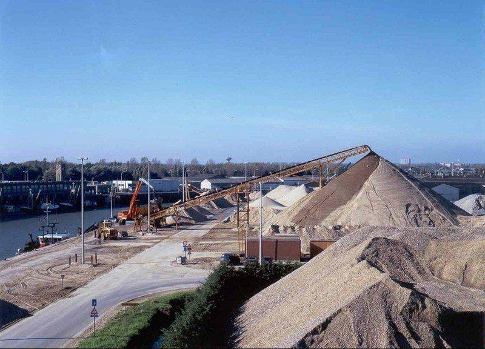
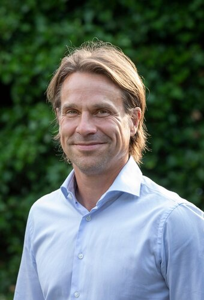
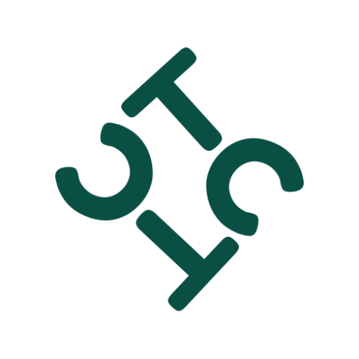
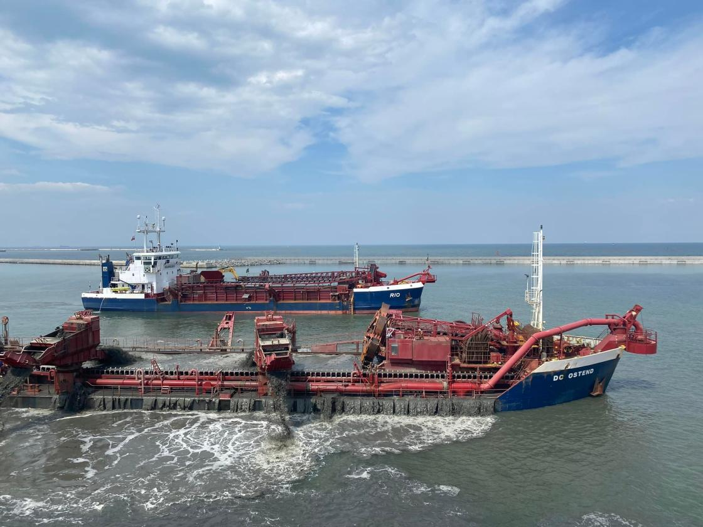
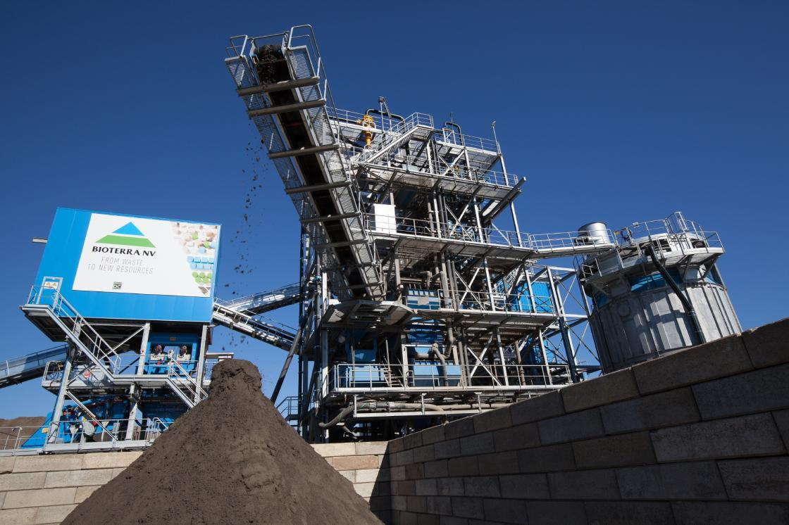
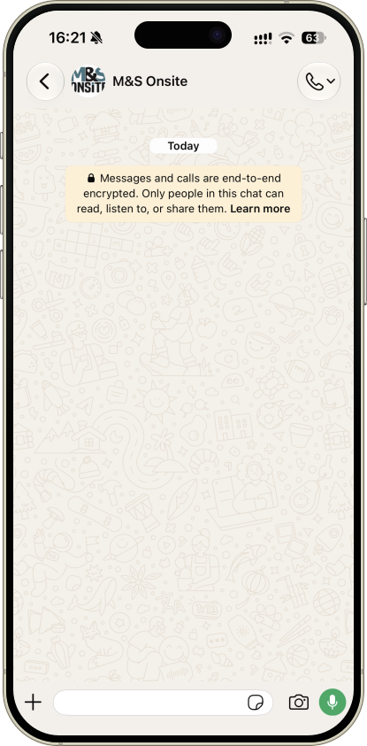

01
Bodem
Verontreinigde terreinen inschatten, saneringsopties afwegen en de uitvoering begeleiden tot de site opnieuw inzetbaar is.
Via Consulterra. Expertise in bodem, water en milieuprojecten.

Over
Luc begon als Projectingenieur in saneringen en groeide door tot Projectleider en Coördinator. Sinds 2012 werkt hij via Consulterra als zelfstandig adviseur. Bij Group De Cloedt (DC Industrial) is hij Tender Manager: hij begeleidt tenders en projecten rond baggerwerken, aggregaten en milieu, en maakt deel uit van het Sustainability Committee van de groep.

“Ik begeleid trajecten waar bodem, water en planning samenkomen, van eerste inschatting tot een dossier dat rond is.”
Expertise
25+ jaar ervaring in bodem, water en milieu

Verontreinigde terreinen inschatten, saneringsopties afwegen en de uitvoering begeleiden tot de site opnieuw inzetbaar is.

Diagnose, behandeling en opvolging van grondwaterproblemen, afgestemd op Belgische regelgeving en de realiteit op de werf.

Alle partijen op één lijn houden: aannemers, overheden en opdrachtgevers, met duidelijke timing en een dossier dat klopt.
Een traject of samenwerking verkennen? Ik denk graag mee.
Projecten
Levering en plaatsing van 650.000 m³ zand-grindmengsel als fundering voor de nieuwe beschermende breakwater in de Noordelijke Haven van Gdansk. Het mengsel kwam uit een winningszone in de Oostzee en werd gestort als basis voor de caissonconstructie, daarna aangevuld en zijdelings versterkt.
Tijdens de uitvoering werkten DC Orisant en Rio tot zes dagen per week, met wekelijkse volumes van meer dan 15.000 m³. Het project maakt deel uit van de modernisering van het breakwatersysteem van de haven.
Levering van circa 68.000 ton armour stone (Norit 15/120 kg) vanuit Noorse steengroeven naar Thyborøn, voor een offshore windpark in de Noordzee. De stenen werden met Hagland-schepen aangevoerd, per vrachtwagen naar de opslag gebracht en gestapeld, klaar voor overslag op het installatieschip.
Vejlby Entreprenørforretning verzorgde het transport aan land. Het installatieschip Grane R laadt ongeveer 4.000 ton om de twee dagen; de steenvoorraad aan de kade moest daarop afgestemd blijven.
Standby olierampbestrijding voor de European Maritime Safety Agency op de Noordzee. Group De Cloedt houdt een baggerschip met oliebergingsuitrusting paraat voor grote calamiteiten op zee, niet voor kleine olievlekken.
Sinds 2008 loopt de opdracht. Vandaag is de Interballast III actief voor EMSA, na aanpassingen in Oostende. Viermaal per jaar volgen er verplichte oefeningen voor schip en bemanning. Eerdere inzet was er onder meer bij de Flinterstar voor de Belgisch-Nederlandse kust in 2015.
Loopbaan
Consulterra
Adviseur op tenders en projecten.
DC Industrial NV · Group De Cloedt
Via Consulterra. Lid van het Sustainability Committee.

Bioterra NV

Bosatec NV
DEC NV · DEME
Contact
Stuur een WhatsApp of mail. Ik denk graag mee en antwoord zo snel ik kan.
